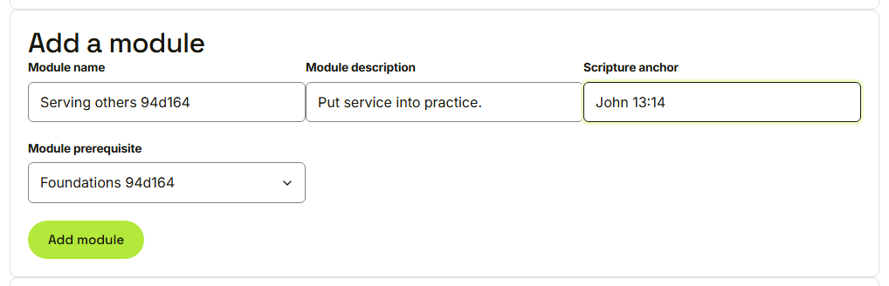
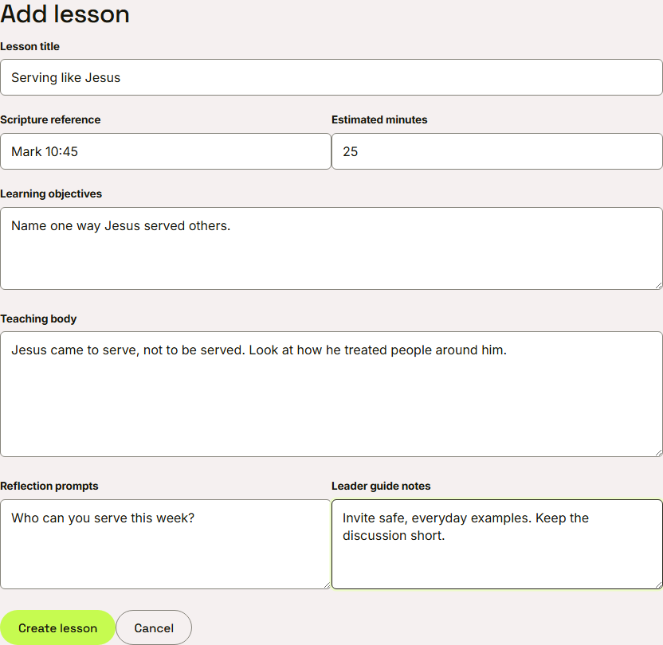
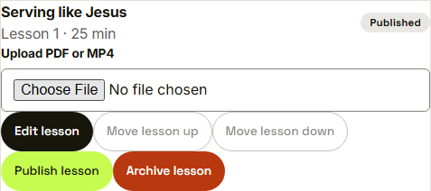
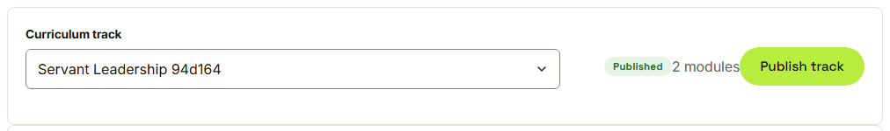

Waypoint · Journey 06
Author curriculum
Tracks, modules and lessons, built by a program administrator
A track starts with a name, a key and a description
Modules, with an optional prerequisite

Serving others needs Foundations first
A prerequisite can never come later
 The order stays as it was
The order stays as it was
Writing the lesson

Leader guide notes are never shown to youth
What a youth sees, and what only leaders see
- The teaching body is what the youth reads
- Reflection prompts are questions for the youth
- Leader guide notes stay with the leaders
- A new lesson starts as a draft
Publish, bottom up

The lesson card now reads published
The track goes live

Published track, two modules
Things to remember
- A track holds modules, and a module holds lessons
- The order decides what youth see
- Leader guide notes stay with the leaders
- Nothing reaches a youth until it is published